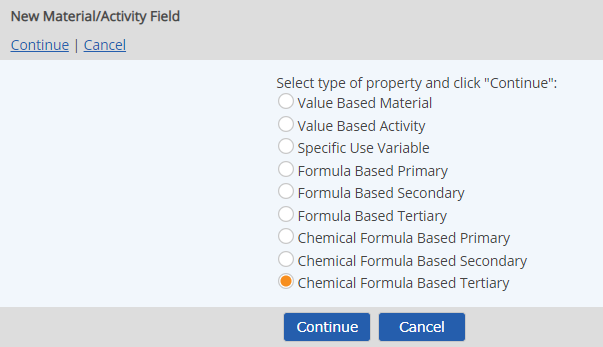
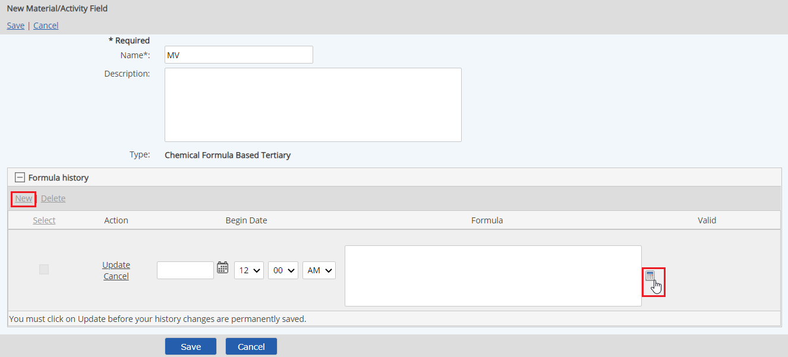
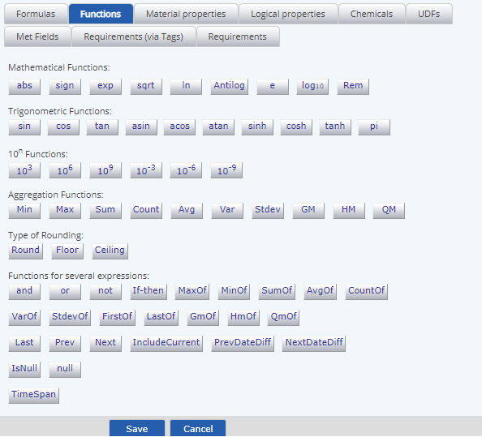
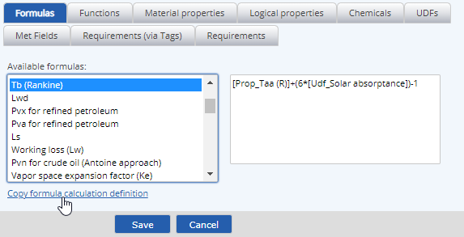
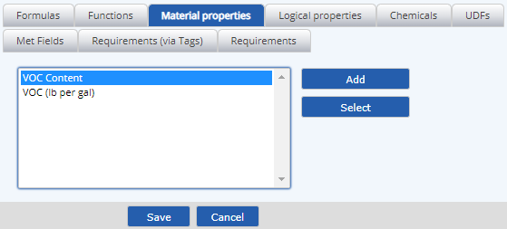
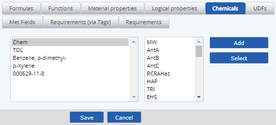
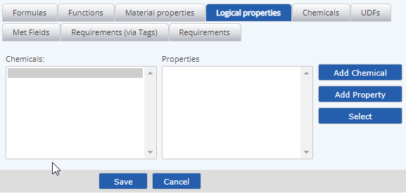
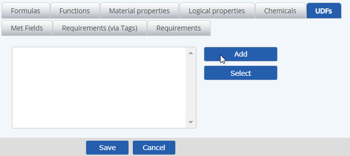
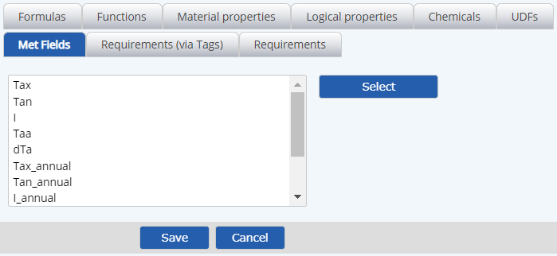
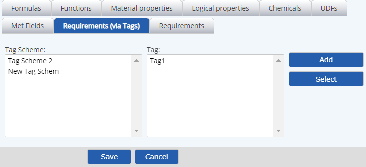

Before creating a Material Formula Based Property, you need to decide whether the property should be Primary, Secondary or Tertiary.
Although any calculation that may be done as a Primary FBP may also be done as a Secondary, and likewise Secondaries as Tertiaries, choosing the right property type will help ensure that your calculations will run most efficiently and return results faster.
A second consideration is whether to use a standard Formula Based Property or a Chemical Formula Based Property.
See Chemical Calculations for an explanation of how to use chemical properties with the correct syntax for the results desired.
The process of creating a formula-based property is the same for all types. However, the Calculation Editor look slightly different, as it will only offer the components that can be used in each type.
To create a formula based property for a material:
Select the type of property: Formula Based Primary, Secondary or Tertiary.

Enter a name for the property, and an optional description.
The description is only seen in the Material/Activity Field Library list, but may be useful when selecting properties to add to a material.
Click the plus sign (+) to expand the Formula History section, then click New.
Click the calculator button to define the property formula.

Use the calculation builder to build the formula. The Calculator has tabs for the various components you can use in a material formula.
Functions: This tab contains the functions that can be used in a formula and the numeric keypad. The function keys aid in constructing the proper syntax. You may also type directly in the formula window if you know the correct syntax.

Formulas: These are global formulas that can be used as a template in defining your calculation. Once added to the calculation window, the formula can be edited for specific components. Select a formula to see the formula. Click Copy formula to calculation definition to add it to the formula window. You can then edit it as needed and replace the components of the calc as needed.

Material Properties: These are the VBPs and other formula based properties you want to use in the formula. Click Add to search for and add one or more properties, then select a property and click Select to add it to the formula.

The properties will be added to the calculator window. Select a property in the window and click Select to add it to the formula.
Chemicals: These are the properties of chemicals used in the materials. Click Add to search for and add one or more chemicals.
For chemical explicit properties, select the chemical, then the property, and click Select to add it to the formula.
For chemical logical properties, select "Chem", then the property and click Select to add it to the formula.
(See Chemical Calculations for an explanation of chemical logical and chemical explicit properties.)

Logical Properties: These are the Chemical Formula Based Properties, which are automatically expanded for each chemical in a material. See Chemical Calculations.

UDFs: These are the numeric fields that are stored on a calculation template, which must be applied to the parent tree object where the material is used in a material data line. These properties are only available in Secondary and Tertiary properties, since they require a location.

Met Fields: These are the location-based meteorological fields that are defined by the Meteorological Location property on the parent tree object where the material is used in a material data line. These properties are only available in Secondary and Tertiary properties, since they require a location. Select a Met field and click Select to add it to the formula.

Requirements (via Tags): These are standard requirements (parameters, system variables and calculated requirements) that you may use in material formulas if you have first set up a tagging scheme so the system can identify them at data entry. Click Add to add one or more tag schemes, then select the tag scheme and tag and click Select to add it to the formula. These values are only available in Tertiary properties, since they require a location and can only be resolved upon data entry. See Referencing Requirements in Material Scripts.

Enter a Begin Date for the formula (the date from which the calculation is valid), then click Update.
The formula will be validated for syntax and the presence of all referenced properties. Errors must be fixed before you can save the property.
If the validation is not successful, click Edit to fix the errors.